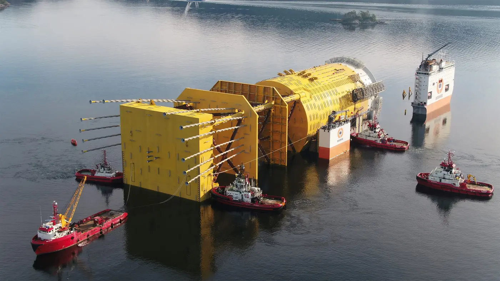

Maritime services · Noreg
Vi holder fartøy og anlegg i bevegelse
Buksér og Berging leverer maritime tenester innan hamn og terminal, offshore og komplekse marine operasjonar — med eigne fartøy og mannskap.
Kontor3
Operasjon24/7
E-postops@bube.no
Illustrasjon: fartøy som passerer på bølgjer, med kjølvatn. Dekorasjon, ikkje operasjonsdata.
Det vi gjer
Maritime tenester til hamn, offshore og havbruk.
Havnebuksering
Buksering og skipseskorte i hamn og terminal.
HamnOffshore støtte
Offshore støtte og marine entreprisar.
OffshoreBerging og beredskap
Salvage og akutt response i kritiske situasjonar.
BeredskapLos- og ambulansebåt
Transport av norske losar og ambulansetenester til sjøs.
TransportHavbruk
Støtte til havbruk og oppdrettsanlegg.
HavbrukFartøy og utstyr
Eigne fartøy og utstyrspool for oppdrag.
Utstyr
Maritim erfaring, nybygg og opplæring
Bube jobbar med maritim ekspertise, nybygg og kompetanse, og har eige system for sustainable operations (Blueflow) og kvalitets- og HMS-arbeid.
- Maritim ekspertise
- Nybygg og kompetanse
- Berekraftige operasjonar
Tre stader
Hovudkontor, operasjonar og crew — lokalt der fartøya er.
Stavanger
4007 Stavanger
Lysaker
1366 Lysaker
Fedje
5947 Fedje
«Maritime tenester innan hamn og terminal, sleping, offshore og komplekse marine operasjonar.»
Treng de støtte på sjøen?
Ta kontakt med operasjonsavdelinga.